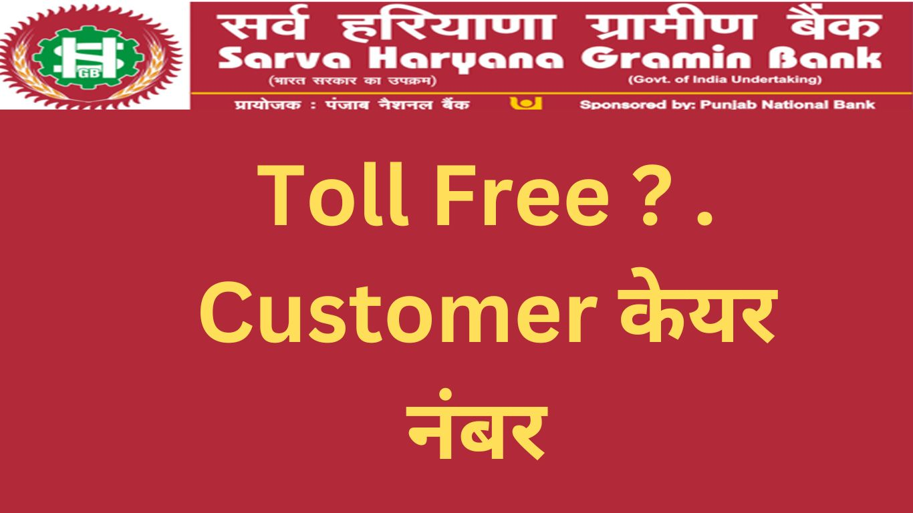

सर्व हरियाणा ग्रामीण बैंक कस्टमर केयर नंबर – सहायता का एकमात्र स्रोत
दोस्तों हम यहां आपको सर्व हरियाणा ग्रामीण बैंक (Sarva Haryana Gramin Bank ) के Customer Care से संपर्क साधने के बारे में विस्तृत जानकारी प्रदान करेंगे। इस लेख में आपको यहां सर्व हरियाणा ग्रामीण बैंक कस्टमर केयर नंबर Sarva Haryana Gramin Bank Customer Care Number, संपर्क विवरण, Address ,Email ID ,Head office Contact Details और अन्य महत्वपूर्ण जानकारी मिलेगी। तो चलिए, हम शुरू करते हैं।
सर्व हरियाणा ग्रामीण बैंक (Sarva Haryana Gramin Bank) Customer Care Number- संपर्क विवरण
सर्व हरियाणा ग्रामीण बैंक कस्टमर केयर नंबर के माध्यम से आप आसानी से बैंक के संपर्क में रह सकते हैं। अगर आपके पास किसी प्रकार की सहायता, समस्या या प्रश्न होता है, तो आप निम्नलिखित तरीकों से सर्व हरियाणा ग्रामीण बैंक कस्टमर केयर टीम से संपर्क कर सकते हैं:
Address Head Office –
Head Office, SHGB House,
Plot No. 1, Sector 3,
Rohtak, Haryana (India) 124001
- FOR GENERAL INQUIRIES (टोल-फ्री नंबर) 1800 180 7777
- INSTANT ATM CARD BLOCK -(टोल-फ्री नंबर) 1800 180 7777
- Cyber Financial Fraud के मामले में Instant Report करने के लिए 1930 (24*7) पर कॉल करें ।
- किसी भी तरह के Cyber fraud से संबंधित Complain रजिस्टर करने के लिए www.cybercrime.gov.in पर भी जा सकते हैं ।
- सर्व हरियाणा ग्रामीण बैंक समस्या टिकट वेबसाइट:https://shgb.co.in/
- सर्व हरियाणा ग्रामीण बैंक ईमेल: cpioshgb@shgbank.co.in

Sarva Haryana Gramin Bank Regional Office Customer Care Number Email & Contact Addresses
{kind=link}
| AMBALA | Sh. Amit Garg Email ID –roambalashgb@shgbank.co.in Contact Number –0171-2551941/2553659, 0171-2553765(F)(F) Polytechnic Chowk, Ambala City, Ambala |
| FATEHBAD | Sh. Vinod Kumar Singhal rofatehabadshgb@shgbank.co.in 01667-222210, 01667-222209(F) Opp BSNL Exchange, Sirsa Road, NH-1, FatehabadGet Direction |
| HISAR | Sh. Satish Sharma rohisarshgb@shgbank.co.in 01662-231843/225568, 01662-227972(F)(F) Defence Colony, Hisar(Haryana)Get Direction |
| PANIPAT | Sh. Nishant Jain ropanipatshgb@shgbank.co.in 0180-2666400 Sanoli Road, Near Chandni Bagh PanipatGet Direction |
| ROHTAK | Sh. Rajeev Kumar rorohtakshgb@shgbank.co.in 01262-210094, 01262-210096(F) SHGB House, Plot No. 1, Sector 3, RohtakGet Direction |
| NUH | Sh. Jai Bhagwan ronuhshgb@shgbank.co.in 01267-274799 Pragati Bhawan’, Plot No-36P, Sector-44, GurgaonGet Direction |
| REWARI | Sh. Satish Kumar rorewarishgb@shgbank.co.in 01274-256887 Circular Road, Near Jhajjar Chowk, RewariGet Direction |
| KAITHAL | Sh. Sanjeev Rana rokaithalshgb@shgbank.co.in 01234567 SCO-161P, 162,163 1st Floor, Sector 20, HUDA Kaithal, Haryana (136027)Get Direction |
| GURGAON | Sh. Satish Kumar rogurgaonshgb@shgbank.co.in 0124-2576500, 01251-255110(F) Pragati Bhawan’, Plot No-36P, Sector-44, GurgaonGet Direction |
| BHIWANI | SH. R.K. Bhukal robhiwanishgb@shgbank.co.in 01664-253579/210155, 01664-242328(F)(F) HUDA City Centre, BhiwaniGet Direction |
Sarva Haryana Gramin Bank Divisional Customer Care Number
- FINANCIAL INCLUSION DIVISION:- Contact Number – 01262-243128 Email ID –hofishgb@shgbank.co.in
- CREDIT ADMIN DIVISION Contact Number-01262-243112 Email ID-holoanshgb@shgbank.co.in
- INSPECTION & AUDIT DIVISION Contact Nunber-01262-243122,243143 Email ID- hoinspshgb@shgbank.co.in
- CHAIRMAN SECRETARIAT Contact Number-01262-243101,243106 Email ID-cms@shgbank.co.in
- VIGILANCE OFFICER Contact Number-01262-243141 Email ID-voshgb@pnb.co.in
- DIGITAL BANKING DIVISION (ATM) Contact Number-01262-243127 Email ID-hodbd@shgbank.co.in
- MARKETING & INSURANCE DIVISION Email ID-homktshgb@shgbank.co.in
- COMPLIANCE AND CONCURRENT AUDIT DIVISION Contact Number-01262-243122 Email ID-shgbcomplaints@shgbank.co.in
- COMPLAINT DIVISION Contact Number-01262-243122 Email ID-shgbcomplaints@shgbank.co.in
सर्व हरियाणा ग्रामीण बैंक कस्टमर केयर टीम आपकी सहायता के लिए 24×7 उपलब्ध है और आपकी समस्या को जल्द से जल्द हल करने का प्रयास करेगी।आपकी प्रश्नों और समस्याओं का उत्तर तुरंत दिया जाएगा, इसलिए आपको किसी भी प्रकार का इंतजार नहीं करना पड़ेगा।
सर्व हरियाणा ग्रामीण बैंक कस्टमर केयर नंबर – सेवा सुविधाएं (Service & Facilities)
सर्व हरियाणा ग्रामीण बैंक कस्टमर केयर टीम का मुख्य उद्देश्य ग्राहकों की सेवा में उच्चतम मानकों को प्रदान करना है। सर्व हरियाणा ग्रामीण बैंक कस्टमर केयर टीम के सदस्य प्रशिक्षित और अनुभवी हैं, जो ग्राहकों के प्रश्नों और समस्याओं का तत्परता (Readiness) से समाधान करने के लिए प्रतिबद्ध (Committed) हैं। यहां कुछ महत्वपूर्ण सेवाएं हैं जो सर्व हरियाणा ग्रामीण बैंक कस्टमर केयर टीम हमें प्रदान कर सकती है:
खाता जानकारी ( Account Information)
सर्व हरियाणा ग्रामीण बैंक कस्टमर केयर टीम आपको आपके खाते से जुड़ी सभी जानकारी प्रदान कर सकती है। आप यहाँ अपने खाते संबंधित प्रश्नों( Account Related Query ), स्थिति की जांच (Status Check), शेष राशि(Account Balance Enquery) , उद्धारण, ब्याज दर, और अन्य खाता संबंधी जानकारी प्राप्त कर सकते हैं।
लोन सुविधाएं (Loan Service)
कस्टमर केयर टीम आपको विभिन्न ऋण(Loan) सुविधाओं के बारे में जानकारी प्रदान कर सकती है। आप ऋण(Loan) के प्रकार, योग्यता, ब्याज दर, अनुदान की शर्तें, और आवश्यक दस्तावेजों के बारे में बातचीत कर सकते हैं। सर्व हरियाणा ग्रामीण बैंक कस्टमर केयर टीम आपको ऋण(Loan) के लिए आवेदन करने में मदद कर सकती है और आपके Loan लेने की प्रक्रिया को आसान बना सकती है।
शिकायतों का समाधान (Grievance Redressal)
यदि आपके पास किसी भी प्रकार की शिकायत है, तो सर्व हरियाणा ग्रामीण बैंक कस्टमर केयर टीम आपकी समस्या का समाधान करने के लिए तत्पर है।यहाँ आपकी शिकायतों को गंभीरता से सुनेंगे और उन्हें तत्परता से हल करने का प्रयास करेंगे। सर्व हरियाणा ग्रामीण बैंक कस्टमर केयर आपकी समस्या को ठीक करने के लिए उच्चतम स्तर की Customer Service प्रदान करेंगे।
अंत में
हम उम्मीद करते हैं कि यह जानकारी आपके लिए महत्वपूर्ण और उपयोगी साबित होगी। सर्व हरियाणा ग्रामीण बैंक अपने ग्राहकों की सेवा में विश्वसनीय और सुरक्षित है और हमेशा उनकी सहायता के लिए तत्पर रहती है। इसलिए, आप आवश्यकता के समय सर्व हरियाणा ग्रामीण बैंक कस्टमर केयर नंबर का उपयोग कर सकते हैं।